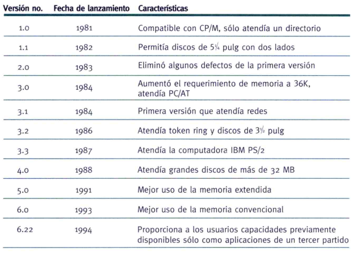
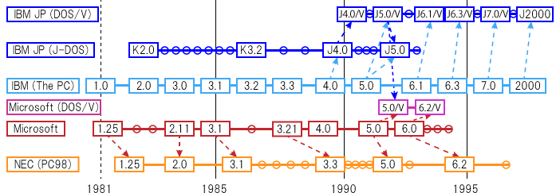
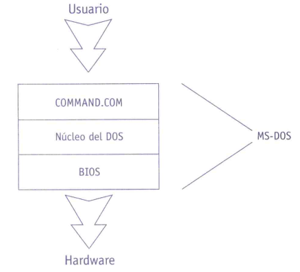
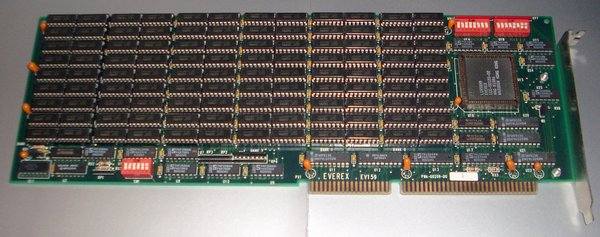
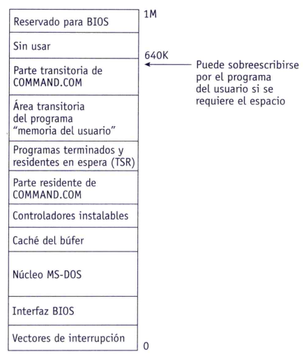
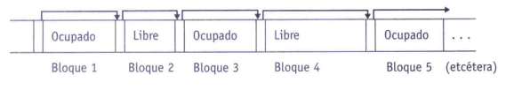
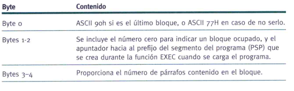
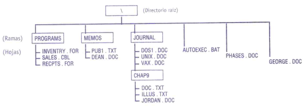
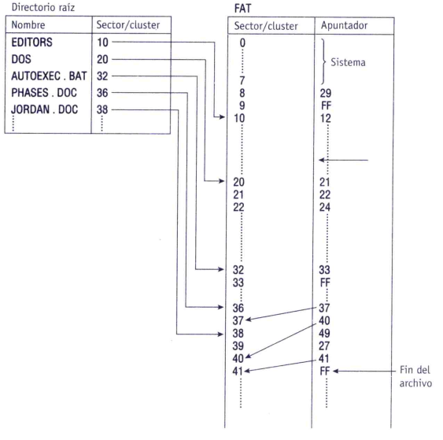

Sistemas Operativos Monotarea
MS-DOS
Introducción
Documental "El Triunfo de los Nerds - Parte 2"
Película "Silicon Cowboys"
Historia de MS-DOS

Timeline de MS-DOS
J-DOS, NEC y DOS/V: versiones para Japón y China
Objetivos de Diseño
- Destinado a un único usuario.
- Interfaz de línea de comandos (CLI).
- Organizado por capas.
- Permite ejecutar un solo programa a la vez.
Capas de MS-DOS
Capa BIOS
Encargada de abstraer el acceso al hardware de E/S.
En MS-DOS está formada por dos partes: una que se implementa en ROM (ROM BIOS) y la otra en SO (IO.SYS).
Capa DOS
Contiene el código necesario para la gestión de la memoria y los archivos y directorios.
Se implementa mediante el archivo MSDOS.SYS presente en el disco de inicio.
COMMAND.COM
Es el shell de línea de comandos. Reside en el archivo COMMAND.COM.
Recibe y procesa los comandos del usuario. No es interpretativo.
Se puede emplear otro shell en lugar del command.com.
Gestión de Memoria
- Pensada para ejecutar un solo programa.
- Usaba algoritmo de primer ajuste (luego permitió peor ajuste).
- Se organizaba en RAM y ROM.
- Máximo de 1MB de RAM.
- Memoria Expandida (EMS) y Extendida (XMS).
Memoria EMS/XMS
Placa de expansión de memoria AT (3 MB).
Organización de Memoria
Asignación de Memoria
- Los .exe definen mínimo y máximo a usar. Los .com utilizan toda la TPA.
- En la TPA puede haber varios programas cargados.
- La memoria se asigna en bloques y se puede solicitar dinámicamente.
- Máximo de 1MB de RAM.
- Memoria Expandida (EMS) y Extendida (XMS).
Asignación de Bloques
- Usa algoritmo de primer ajuste y una lista enlazada de bloques.
- Bloques de tamaño variable.
- Se mantiene una lista de enlazada de bloques de memoria.
- Dos bloques libres/ocupados contiguos se fusionan.
Organización de Memoria

Lista enlazada de bloques.

Encabezado de Bloque.
Adm. de Procesos
- MS-DOS no fue escrito en código reentrante.
- No permite multitarea, pero permite mantener más de un programa residente en memoria.
- Se puede cambiar rápidamente entre programas residentes utilizando interrupciones.
Interrupciones
- 256 interrupciones y sus manejadores.
- Se clasifican en internas, externas, y de software.
- Un ejemplo de interrupción SW es la "TSR".
- La sincronización de interrupciones debe realizarse con precaución.
Adm. de Dispositivos
- DOS no reordena las solicitudes por ser monotarea.
- A partir de la versión 3 se implementa spooling.
- Dispositivos accesibles mediante puertos de E/S.
- BIOS brinda acceso a los dispositivos simples. En caso de dispositivos especiales se pueden utilizar controladores de dispositivo.
Adm. de Archivos
- Brinda acceso a archivos secuenciales, directos (aleatorios), e indexados secuenciales.
- Organiza los archivos con: Unidades, Directorios y Archivos.
- Directorios con estructura de árbol.
- Se puede acceder a los archivos mediante rutas relativas y absolutas.
Árbol de Directorios
File Allocation Table
Interfaz de usuario
- Basada en comandos (inspirados en verbos del inglés).
- Cuenta con comandos internos (dentro de COMMAND.COM) y externos.
- Permite la creación de archivos por lotes (.BAT)
- Brinda redirecciones, filtros y tuberías.
Demo de MS-DOS
Bibliografía
- McIver: Sistemas Operativos - Capítulo 14.
¡Gracias!
https://sofrcu.github.io/
Esta obra de
Gabriel Arellano está bajo
una
licencia Creative
Commons
Atribución-CompartirIgual 4.0 Internacional.